Cars & engines
How an engine turns fuel into motion. It's the reason I modelled a V8 one part at a time.

Computer Science & Business · Trinity College Dublin
I'm interested in two things: the patterns hidden in data, and ideas turned into things you can hold. So I work on both sides of the line, software and hardware.
Software ⟷ Hardware
I'm a first-year Computer Science & Business student at Trinity College Dublin, with a strong interest in both software and hardware.
On the software side, I'm drawn to data and the patterns within it, from Python scripting to optimising a trading strategy over thousands of backtests. On the hardware side, I like seeing ideas come to life: taking designs from concept sketches to parametric SolidWorks parts and assemblies, then into hands-on mechanical builds.
Right now I'm co-founding Resonance, a web start-up that rebuilds outdated websites for small businesses.
How an engine turns fuel into motion. It's the reason I modelled a V8 one part at a time.
Price action, backtesting, and the statistics behind whether a strategy actually holds up.
Fixing things by hand: drivetrains, brakes, and rebuilding bikes for people who need them.
Taking a product from concept sketch to parametric model and technical drawing, like the soap dispenser I designed for my Leaving Cert DCG project.
Pick one to open
Five projects, from an engine to an app that reads a snooker table.
Open a tile to maximise it. Each project has its own space: explore it, then minimise it to choose another.
 01
SolidWorks · C# · 3DV8 Engine40-part CAD assembly you can take apart
02
Pine Script · BacktestingNO Candle Strategy11,142 backtests across four FX pairs
03
TikTok · SimpleStudyStudy content31K+ views on my top three videos
04
The Bike Hub · SolidWorksBikes & mechanicsRebuilds for people in need, and an e-bike kit
05
JavaScript · Computer visionGhost BallFinds your easiest pot from one photo of the table
01
SolidWorks · C# · 3DV8 Engine40-part CAD assembly you can take apart
02
Pine Script · BacktestingNO Candle Strategy11,142 backtests across four FX pairs
03
TikTok · SimpleStudyStudy content31K+ views on my top three videos
04
The Bike Hub · SolidWorksBikes & mechanicsRebuilds for people in need, and an e-bike kit
05
JavaScript · Computer visionGhost BallFinds your easiest pot from one photo of the table
Smaller builds, client work and design projects.
A web start-up I co-founded with a friend. We rebuild outdated websites for small businesses so they’re easier to use and look modern.
Custom timetabling software for Resonance’s first client, VS Driving School, to schedule and manage driving lessons.
A SolidWorks design that turns a standard bicycle into an e-bike, with the motor and battery mounted on a frame someone already owns.
My Leaving Cert DCG project, taken from concept sketches to a parametric model and technical drawings.
On work experience at TCS, my team reimagined food delivery as a drone-based system. I designed the app prototype and user journey in Figma.
Click a role to expand
Contact
I'm always up for a conversation about engines, markets, or something you're building. The quickest way to reach me is email.
Drag to rotate · click a part · click, then scroll to zoom
A 5.7-litre, 90° V8 with a cross-plane crank, based on GM's LS small-block. 18 unique parts, 40 in the assembly, all mated so that turning the crankshaft drives every piston and rod. The model above uses the real geometry exported from SOLIDWORKS.
Parametric from end to end, so the whole engine can be regenerated.
Every dimension lives in a single Spec class: bore, stroke, rod length, deck height, bore spacing and bank stagger.
Each part is built from sketches, extrudes, revolves and cuts, generated by a C# program that drives the SOLIDWORKS API.
Pistons ride on their bore axes, and rods link wrist pins to crank pins. The banks are staggered 23.8 mm so each pair of rods shares one crank journal.
Piston positions match the slider-crank equation to 0.0000 mm through a full turn, and interference detection finds no clashes.
// distance from the crank centreline to the
// piston pin, measured along the bore axis
public static double PistonPinDist(int cyl, double crankDeg)
{
var c = CrankPin(ThrowOf(cyl), crankDeg);
var u = U(Sigma(cyl)); // bank axis, ±45°
double along = V2.Dot(c, u);
double perp = V2.Cross(u, c);
return along + Math.Sqrt(RodLen * RodLen - perp * perp);
}The 3D model above runs on the same equation, so every piston and rod on this page is where the CAD model says it should be.


A rule-based price-action strategy I wrote in Pine Script on TradingView, then tuned with 11,142 backtests on four currency pairs (15-minute charts, 30 Nov 2025 to 25 Sep 2026, $100K test account). The original settings lost money on every pair. The tuned versions are profitable on all four, trading both long and short.
Settings combinations run in the TradingView Strategy Tester
Up from 0 / 4 with the original settings
Gross profit ÷ gross loss for the tuned scripts
At 75% of equity per trade, the largest size with no margin calls
Lost money on all four pairs, from −$31 (GBPJPY) to −$280 (GBPUSD).
Move each setting on its own away from the baseline to find which ones matter.
Improve one setting at a time until nothing helps, restarting from 12 different starts to avoid local optima.
Test every combination of the settings that interact most (wick tolerance × stop × reward:risk) around the winners.
Keep only settings with ≥ 100 trades and no worse a drawdown than the original, then test size and leverage.
Ranges tested: trend mode (all 4) · pivot 1–5 · EMA 50–300 · validity 3–20 · pending 1–5 · wick tolerance 0–10 ticks · swing-stop buffer 0–20 ticks, with or without the wick · NO-range stop 0.5–6× · reward:risk 0.5–3 · direction · position size 5–100% · leverage 10×, 20×, 50×.
Everything below is at 10% of equity per trade unless it says otherwise, so the settings compare directly.
The pair script's defaults next to the original. A dot marks each setting the tuning changed.
Net profit when one setting is changed and the rest stay at the tuned values. The coloured bar is the chosen value; faded bars break a guardrail.
The same four scripts with bigger positions. 75% of equity per trade is the largest size with no margin calls on any pair.
$100K account. At 100% every pair hits hundreds of margin calls, and the results collapse.
I documented my Leaving Cert preparation on TikTok as @lil_indian_boi, reaching thousands of students and motivating them to reach their own academic goals. That led to becoming a brand ambassador for SimpleStudy, promoting its study resources to students.
My three most-viewed videos, with over 31,000 views between them.
 13.7K viewsRoad to 625: Maths revision, Ep 9
13.7K viewsRoad to 625: Maths revision, Ep 9
 9,017 viewsSpeed-running a whole Maths Paper 1 in about 90 minutes
9,017 viewsSpeed-running a whole Maths Paper 1 in about 90 minutes
 8,784 viewsLight 5-hour revision
8,784 viewsLight 5-hour revision
My study videos led to a place on SimpleStudy’s Ambassador Program, promoting its study resources to other students.

In June 2025 I volunteered at The Bike Hub in Dún Laoghaire, building and repairing around ten bikes from scratch under an experienced mechanic. Every one was donated to people in need through the local council. Separately, I designed an e-bike conversion kit in SolidWorks.
Take one photo of a pool or snooker table from above. Ghost Ball finds the table, flattens the perspective and picks out every ball, including the white. Then it works out every pot on the table: straight, off a cushion, or through another ball. It ranks them by the chance you'd make them at your level and draws the best one: where to aim, where to strike the white, and where the white goes next. Everything runs in the browser on your phone; the photo never leaves it.
From above, with all four corner pockets in frame
Straight, bank, kick and combination pots
Every pot it found on the demo table, ranked by chance
The vision and the maths run in the browser
The pictures below are the app's own working on its sample table, not mock-ups: the outline it found, the flattened photo, the distance map it finds balls in, the balls it named, and the shot it chose.
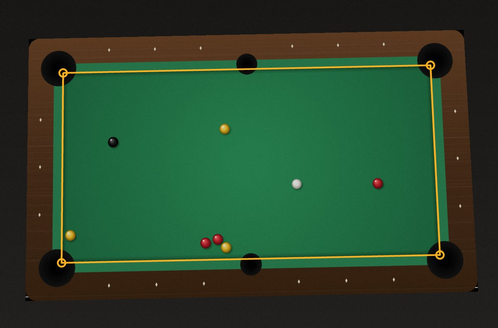
The cloth is the most common strong colour in the middle of the photo. The app keeps the biggest patch of that colour, fits a straight line to each side (skipping the pocket notches) and intersects the four lines. Then it steps in to the cushion nose, where the brightness changes.
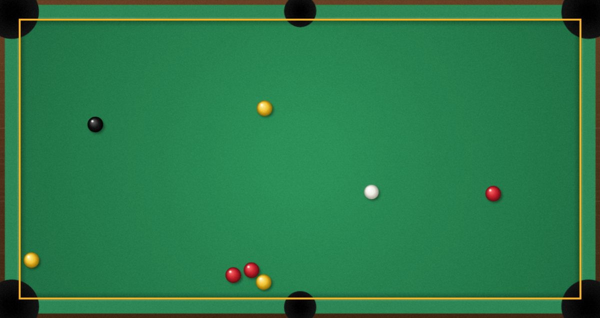
The four corners define a homography that maps the photo onto a flat table 1200 × 600 units long, exactly 2:1. From here on, everything is measured on the real table rather than in photo pixels.
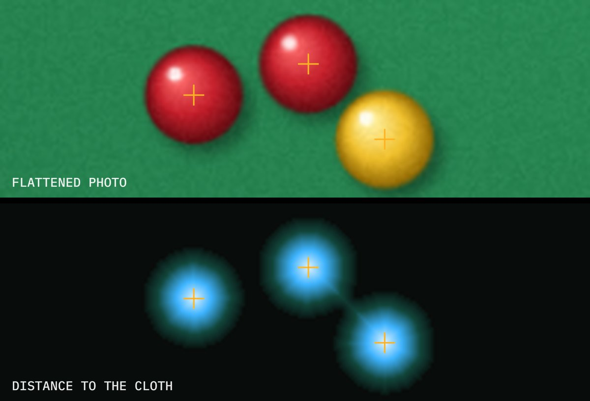
Anything on the cloth that isn't cloth-coloured could be a ball. A distance transform scores every such pixel by how far it is from the cloth, and ball centres are the peaks. Touching balls make one blob but still give separate peaks.
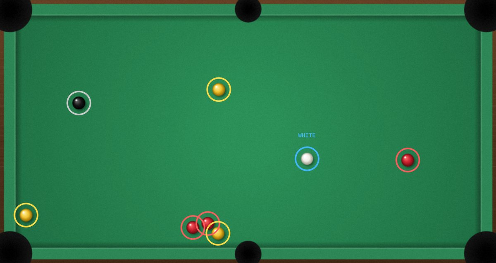
Each ball's pixels are sorted into white, dark and coloured. The whitest ball is the cue ball and the darkest is the black. Hue splits the rest into reds and yellows, or solids and stripes on a US table.
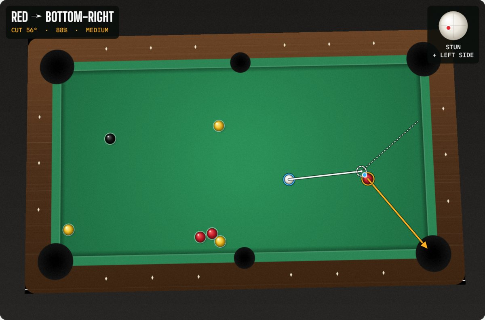
It tries every ball, every pocket, straight, banked, kicked and combined, and scores each by the chance of potting it. The best one is drawn on the photo: aim, contact point, the path into the pocket, and the spin.
The solver never simulates thousands of random shots. It works backwards from the pocket: the directions that drop, the white's directions that produce them, and how much a normal amount of error leaves inside that gap.
A camera turns the table's rectangle into a four-sided shape. A homography, a 3 × 3 matrix H, undoes that. Each corner gives two equations, so four corners give eight, exactly enough for H's eight unknowns. The app solves them with Gaussian elimination.
(x, y) is a pixel in the photo, (u, v) the same point on the flat tableTo build the flat image, every pixel of the 1200 × 600 table is looked up in the photo through H and blended from its four neighbours.
To send the object ball O towards the pocket P, the white has to arrive touching it on the side away from the pocket. That spot is the ghost ball, G. Aim the white's centre at G and the balls meet at the contact point, so O sets off along the line between their centres.
rₒ and r_w are the two radii; on a UK table the white is smaller, 47.6 mm against 50.8 mmThe cut angle θ is the angle between the white's path and the object ball's. The app refuses anything over 80°, because those are too thin to judge.
A pocket isn't a point. From the object ball, the two jaws mark out an angle. The ball's centre has to stay one radius clear of each jaw, which trims a little off each side. Every direction left in between drops.
αᵢ is the direction from the ball to jaw i, and dᵢ its distanceThe solver then works that window back through the collision. By bisection, it finds the range of directions for the white that send the object ball inside it, and aims at the middle.
| Level | Aim spread | Cut error at 90° | Cushion spread |
|---|---|---|---|
| Beginner | 0.20° | 2.0° | 2.5° |
| Club | 0.10° | 1.2° | 1.6° |
| Strong | 0.05° | 0.7° | 1.0° |
The error spreads (standard deviations) behind each level.
Nobody hits the exact line, so the white's direction is modelled as a normal distribution around the aim. The collision magnifies the error: a small change in the white's angle β becomes a bigger change in the object ball's angle φ, worst on thin cuts. The app measures that magnification, ∂φ/∂β, numerically. Throw and misjudged angles add an error that grows with the sine of the cut.
Φ is the normal distribution's cumulative function: P is the share of shots that land inside the windowThat P is the pot chance on the shot card, and the list of other pots is sorted by it.
This runs the app's own solver for straight pots on a UK 7ft table. It starts on the sample table's best shot. Drag the white or the red, or tap a pocket to aim for it. The orange wedge is the pocket window, the dashed ring is the ghost ball, and the dotted blue line is where a stunned white goes.
Drag a ball, or focus it and use the arrow keys (Shift for bigger steps). Tap a pocket again to let the app choose.
A bounce off a cushion is a reflection, so rather than bend the path, the app reflects the target. For a bank it mirrors the pocket and its jaws, and a straight pot at the mirror image P′ is a bank into the real pocket. For a kick it mirrors the white instead. The mirror line sits one ball radius off the cushion, where the ball's centre is when it touches.
Cushions aren't perfect, so each one adds its own spread to σφ, weighted by how much of the path comes after the bounce.
For a combination the window goes back twice. First come the directions ball A must leave in to pot B, then the white's directions that send A that way. The errors compound through both collisions, which is why combinations usually rank lower than a straight pot.
At contact the white loses its speed along the line of centres and keeps the part along the tangent line, at 90° to the object ball's path. Friction then turns its spin into roll. A solid ball has I = ⅖mr², which makes its final velocity five-sevenths of the tangent velocity plus two-sevenths of its spin.
Top bends the white forwards, about 34° off its line near a half-ball hit, which is where the "30° rule" comes from. Screw bends it back. The app follows each option to the first cushion or ball. It suggests stun unless that would go in-off or into another ball; then it picks top or screw, whichever runs clear. Pace comes from how far both balls travel, with the object ball's share divided by cos²θ, the fraction of the white's energy a cut passes on.
function potDirect(cue, obj, pk, g, sk) {
const w = jawWindow(T, pk.jaws, g.r); // directions that drop
const h = w && hitWindow(C, T, s, w.lo, w.hi); // the white's directions that give them
if (!h) return null;
const k = h.hit(h.aim); // aim at the middle
if (k.cut > MAX_CUT) return null;
const sd = Math.hypot(sk.sigma * DEG * k.slope, throwSd(sk, k.cut));
return { type: 'direct', P: chance(k.phi, h.wlo, h.whi, sd), k };
}
// share of a normal error around phi that still lands inside [lo, hi]
const chance = (phi, lo, hi, sd) => Phi((hi - phi) / sd) - Phi((lo - phi) / sd);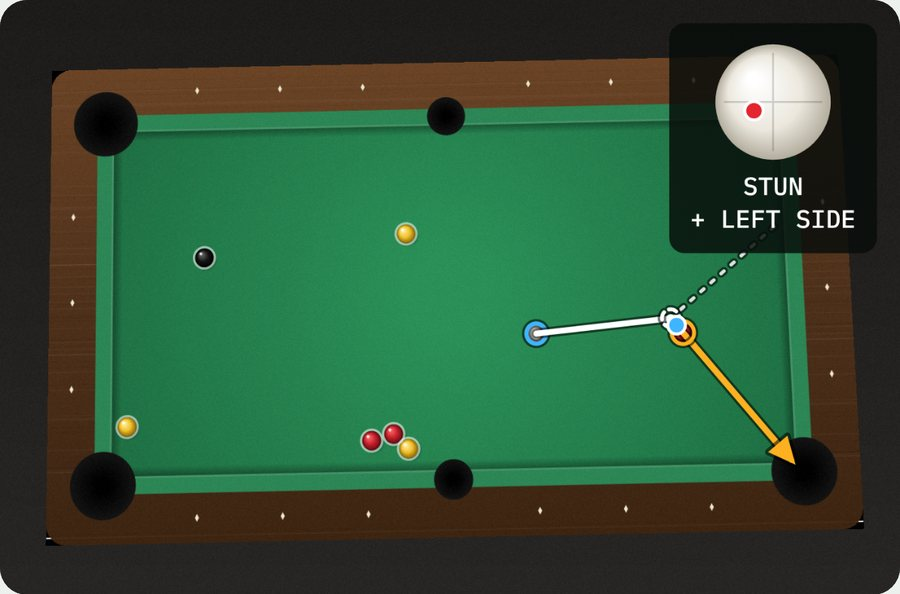
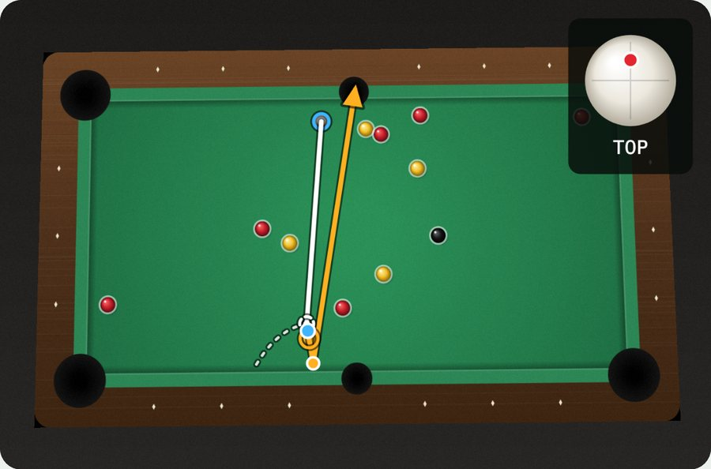
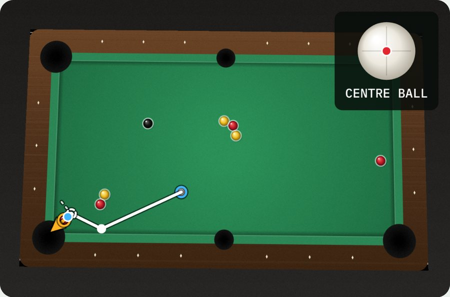
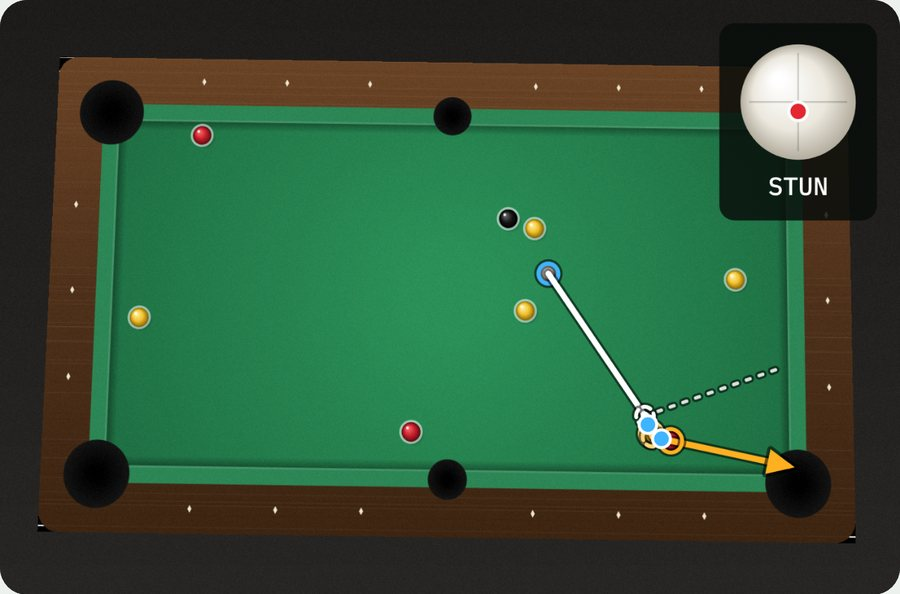
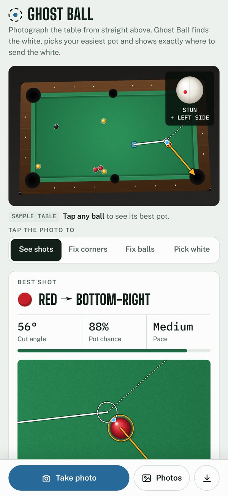
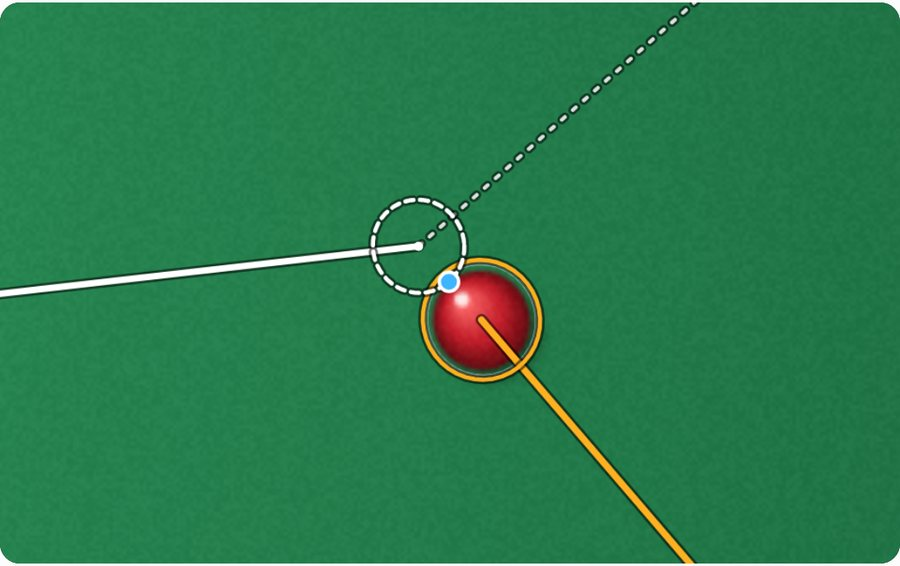
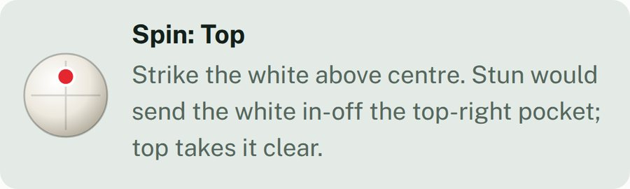